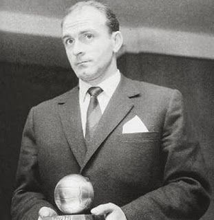
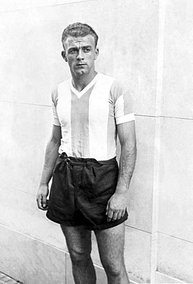
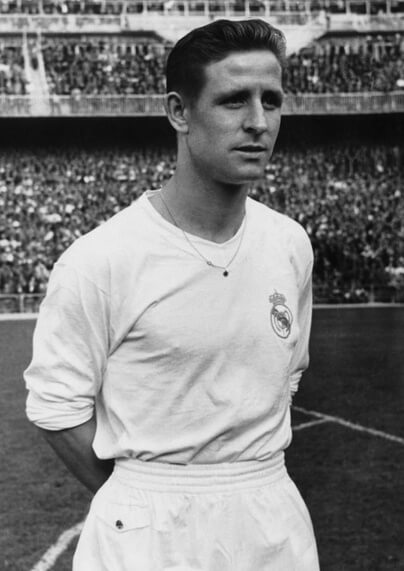
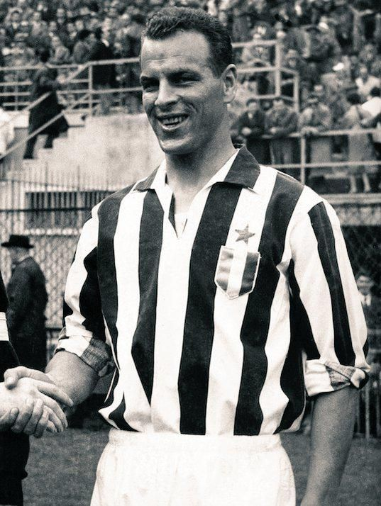

Alfredo DI STEFANO - 1959

- Di Stefano et son second Ballon d'Or
Et de deux, en 1959,
Alfredo Di Stefano
remporte à 33 ans son deuxième Ballon d'Or.
Nationalité : Argentino-espagnole
Né le 4 juillet 1926, à Buenos Aires (ARG)
Décédé le 07 juillet 2014, à Madrid (ESP)
Taille : 1,72
Poids : 70 kg
Poste : attaquant
Clubs : Imam Buenos Aires (1942), River Plate (1943-1945), Huracan (1946), River Plate (1947-1949), Millionarios Bogota (1949-1953), Real Madrid (1953-1964) et Espanyol Barcelone (1964-1966).
Palmarès de joueur : Copa America 1947 ; Coupe Intercontinentale des clubs 1960 ; Coupe des champions 1956, 1957, 1958, 1959 et 1960 ; Coupe latine 1955 et 1957 ; Championnat d'Argentine 1945 et 1947; Championnat de Colombie 1949, 1951 et 1952 ; Championnat d'Espagne 1954, 1955, 1957, 1958, 1961, 1962, 1963 et 1964 ; Coupe de Colombie 1953 ; Coupe d'Espagne 1962 ; meilleur buteur du Championnat d'Argentine 1947 (27 buts) ; meilleur buteur du Championnat de Colombie 1951 (31) et 1952 (19) ; meilleur buteur du Championnat d'Espagne 1954 (27), 1956 (24), 1957 (31), 1958 (19) et 1959 (23)
Bilan en club : 669 matchs, 485 buts
Bilan en équipes nationales : 6 sélections A, 6 buts (1947) avec l'Argentine ; 4 sélections A (1949) avec la Colombie ; 31 sélections A, 23 buts (1957-1961) avec l'Espagne
Palmarès Ballon d'Or : vainqueur en 1957 et 1959 (2e en 1956)
Carrière d'entraîneur : Elche (1967-1968), Boca Juniors (1969-1970), FC Valence (1970-1973), Sporting Portugal (1974-1975), Rayo Vallecano (1976-1977), Castellon (1977-1978), FC Valence (1979-1980), River Plate (1981-1982), Real Madrid (1982-1983), FC Valence (1986-1988) et Real Madrid (1990-1991)
Palmarès d'entraîneur : Coupe des Coupes 1980 ; Supercoupe d'Espagne 1990 ; Championnat d'Argentine 1969 et 1981 ; Championnat d'Espagne 1971
Classement du Ballon d’Or France Football 1959 :

Alfredo Di Stefano (Espagne-Argentine / Real Madrid),
80 pts.

Raymond Kopa (France / Real Madrid),
42 pts.

Charles (Galles / Juventus Turin),
24 pts.
Retour à l'accueil
 Alfredo DI STEFANO - 1959
Alfredo DI STEFANO - 1959